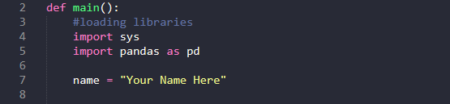
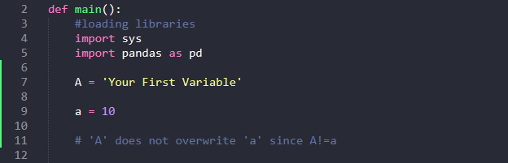
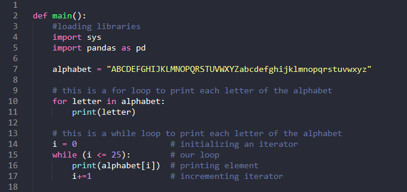
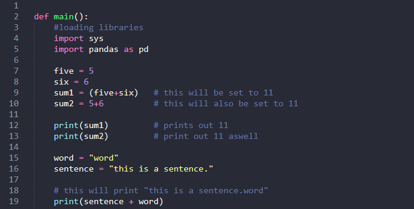
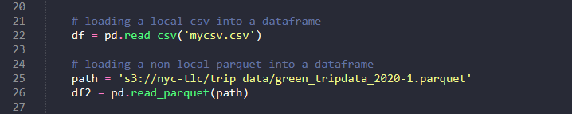
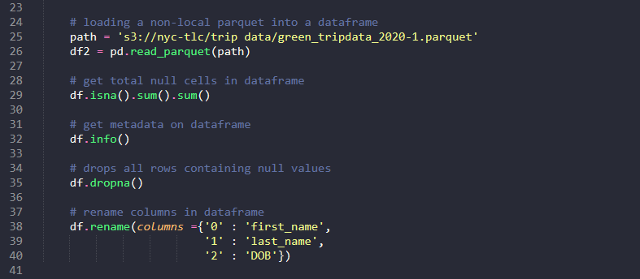

How Data Engineers Use Python
Python is an industry tool that has many packages available to help with the data engineering process.
You can do data ingestion, acquisition, manipulation, and create pipelines. Python can handle multiple
file types and load these file types into a dataframe for manipulation.
If your organization needs to acquire data, python is a great tool for that. Using a few libraries,
you can create a web scraper that will accomplish the time-consuming task of manually entering data.
Python interfaces with different APIs brilliantly which allows it to be so versatile when scarping data.
Another great use case for Python in data engineering is for use with Apache Spark (more info on that later).
Spark is a big data processing platform that utilized PySpark to manipulate dataframes on very large-scale data.
The best part about Python is that it is extremely accessible. The position you are currently working in
may not need Python but knowing how to program in this language would be extremely useful down the line.
Between the analytics, statistical, and machine learning packages, the API integration, and the ability
to easily transform and extract data, Python is a growing tool in our industry.
Python Basics
Variables
Variables in Python are how you store data. For example, take the following line of code:

Here we have name set to “Your Name Here”. Now if we wanted to print “Your Name Here”, instead of
typing it out every time we can just call print on the variable “name”. Variables are not limited
to string type objects. In fact, you can store any Python data type in one. Variables are also
stored in memory which assists with ease of access. String variables can be declared with single
quotes () or double quotes (“), in this example we used double quotes. Lastly, variables are
case sensitive. This means that if you have a variables “A” and another variables “a”, they
will not overwrite each other.

Loops
Loops are a great way to iterate over an action. Loops can be used to print out all the items in a list,
store values in a dataframe that meet a certain criteria, and so much more. There are two different
types of loops, While and For.
A While loop will continue to run until a conditional is met. Thus, if you know how many times you want
your loop to iterate through, you should use a while loop.
A For loop is useful when you do not know how many iterations the program should do.

In the example above we can see that both a For and While loop can accomplish the same task. However, it takes a lot more
effort in this example to run a While loop than a For loop. In the For loop, we set our iterable in this case “letter”.
The iterable then goes over each letter stored in “alphabet” and prints it. The While loop on the other hand needs a
pre-defined iterable. Here we set “i = 0” as python starts counting at 0. The loop then begins with a check. It will ask
itself “is i greater than or equal to 25”? While this condition is not met it will continue to run. In this case it will
print the letter of the alphabet that corresponds with i. After doing the calculation you would like your While loop to do
YOU MUST increment your iterable, otherwise you will be caught in an infinite loop.
Calculations
Python is also able to do multiple types of calculations. It can add numbers, concatenate strings, and even do regression.

For our mathematical example, we have two variables “five” and “six”. We set these variable to 5 and 6 (the integers) and set a
new variable called “sum” to be the addition of “five” and “six”. When we call sum, it will output the integer 11. In our next
example we have a word and a sentence both of which are strings. When we add these two variables together, we get the word
variable appended to the end of the sentence variable. As a note, you do not need to have variables to do calculations. You
can just as easily call print on “this is a sentence.” + “word” and will get the same output.
Libraries
In Python libraries are extremely important. Generally, it is how you will access many of the function's python has to offer.
Here we will go through the most common libraries found for Data Engineer but remember there are many more than what is shown.
Pandas
Perhaps one of Pythons most popular packages is Pandas. Pandas is used to read, write, query, and manipulate data. Pandas dataframes
have many easy-to-use functions with allows for easy data exploration and manipulation such as finding null values.
BeautifulSoup
BeautifulSoup is a Python library that is used for data mining and web scraping. If your organization needs information extracted from
a website that is in HTML or JSON format this is the easiest way to extract it.
Matplotlib, Seaborn, Plotly
Matplotlib, Seaborn, and Plotly are all graphing libraries that allow for visualization on the data. Although a Data Engineer does not
generally make graphs, it is an important step to visualize the data you are working with.
Matplotlib is the original graphing library and as such is not very user friendly and there is a lot of effort required to make your graphs look pretty.
Seaborn is essentially Matplotlib 2.0. It is a slightly more user-friendly and the graphs look significantly nicer.
Plotly is the best graphing library as it is very easy to use and for very little effort your graphs can look amazing.
Data Ingestion and Manipulation
One of the key advantages to using Python is how easy it is to ingest and manipulate data. Using a few simple functions built into Pandas, anyone can quickly start
investigating and fixing any data set. To read in a file you use the “read_*file_type*() function. Something to remember is if you have a local file and it is in
your current working directory, you can call the file directly without a path. If your file is not in your current directory or it is not on your local machine,
you will need to provide a full path.

Once you have your data loaded into a dataframe, there are many functions you can perform to manipulate the data. If you want to get the number of nulls in an entire
dataframe you can use the isna() function. The info() function will display the meta-data, column names, and non-null count per column. You can drop all rows containing
null values using the dropna() function. Sometimes when you import a dataset the columns can be mislabeled. It is easy to change the name with the rename() function.
In the example below, the original dataframe had three columns "0", "1", "2". These column names weren't very descriptive of the content that was stored under them.
Thus, we renamed them to reflect what content the column contained.

Exercise: Leetcode Algorithms
Below are a list of Leetcode questions. They are in order from easiest to hardest. You don't have to finish all these problems in on sitting. We would suggest working through one a dat over the course of your internship.
1. Fizz Buzz
2. Roman to Integer
3. Palindrome Number
4. Valid Parentheses
5. Plus One